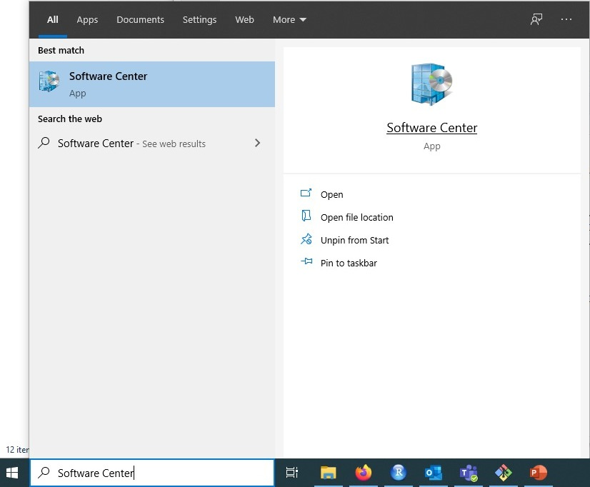
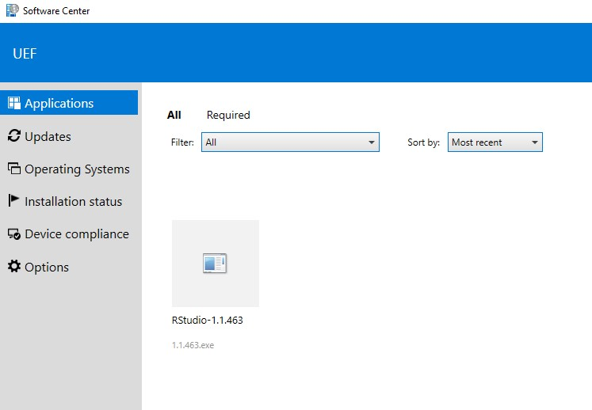
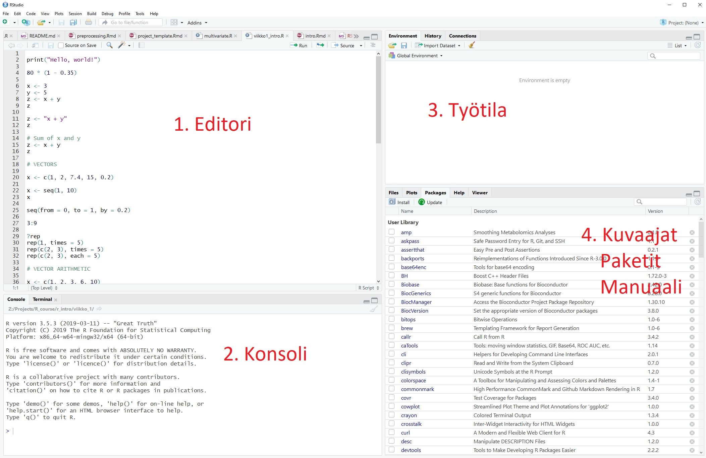
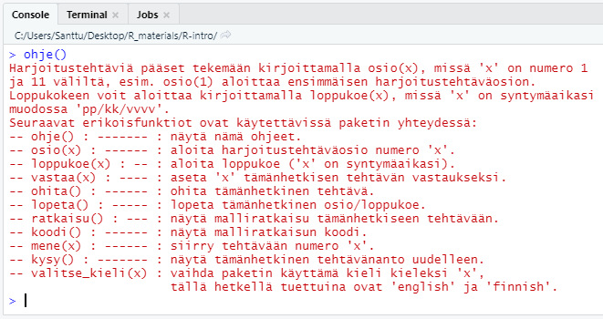

install.packages("remotes")
remotes::install_github("santikka/R-course")Tilastolliset Ohjelmistot: R
Johdanto
Tämä materiaali on suunniteltu käytettäväksi Jyväskylän yliopiston kurssilla Tilastolliset Ohjelmistot sekä Itä-Suomen yliopiston R-kurssilla. Materiaali toimii R-ohjelmoinnin harjoittelun tukena.
Anton Klåvusin vuonna 2020 kirjoittamaa ansiokasta materiaalia on kehitetty lukukauden 2021-22 R-kielen kurssia ajatellen. Materiaalia on täydennetty tarvittavin osin ja amalla materiaali on muunnettu verkkokirjamuotoon. Tämä opiskelumateriaali on luotu Quarto-julkaisujärjestelmän avulla . Kirjaa voi lukea verkkoselaimella ja se toimii myös puhelimella.
Lunttilappu
Tämän materiaalin ohessa kannattaa käyttää apuna nk. Cheat Sheetiä eli “lunttilappua”. Lunttilapusta on helppo tarkastaa miten jokin jo oppimasi asia tehdään R:ssä, jos et vielä muista kunnolla kyseistä asiaa. Internetistä löytyy Cheat Sheetejä useisiin R-paketteihin ja muihin kokonaisuuksiin, mutta tässä käytetään Base R Cheat Sheetiä. Lataa Base R Cheat Sheet itsellesi painamalla tästä.
Verkkolähteitä
Tämä materiaali on tarkoitettu riittäväksi materiaaliksi kurssille. Tässä kuitenkin joitakin verkosta löytyviä lähteitä, joista voi olla apua.
- Tutorialspoint Soveltuu R:n opiskeluun englannin kielellä, jos osaa entuudestaan jo vähän ohjelmoida.
Alkuvalmistelut
RStudio
RStudio on ohjelmointiympäristö eli IDE (Integrated Development Environment), joka tekee koodaamisesta huomattavasti mukavampaa. RStudio on saatavilla useille käyttöjärjestelmille ja se on ilmainen ohjelma. Tässä kirjassa oletetaan, että käytössä on RStudio, mutta muutkin ympäristöt ovat sopivia.
R:n ja RStudion asentaminen omalle tietokoneelle
Mene seuraavalle sivulle, josta asennat ensin R:n (1. vaihe) ja sitten RStudio Desktop omalle käyttöjärjestelmällesi. Ellet tiedä käyttöjärjestelmääsi, on se luultavimmin Windows 10.
https://www.rstudio.com/products/rstudio/download/#download (avautuu uuteen ikkunaan)
RStudion asennus yliopiston koneelle
Mikäli et halua käyttää omaa tietokonettasi kurssin suoritamiseen, niin RStudion saa asennettua UEF:in koneilla Sofware Centerin kautta. Software Center löytyy Windowsin omalla haulla.

RStudio:n voi asentaa Software Centeristä, ja RStudion pitäisi sen jälkeen olla käytettävissä. Tyypillisesti R ja RStudio ovat valmiiksi asennettuna

RStudion käyttö
RStudion näkymässä on neljä osaa:

1. Editori.
Editorilla kirjoitetaan R-koodia sisältäviä tiedostoja, eli R-skriptejä. Uuden skriptin saa auki painamalla File -> New File -> R Script (tai Ctrl + Shift + N). Skripteihin tutustutaan myöhemmin kurssilla, mutta ne ovat yksinkertaisuudessaan kokoelma R-komentoja, jotka yhdessä tekevät jotain, esimerkiksi analysoivat jonkin tutkimusprojektin datan tai piirtävät valmiista tuloksista kuvaajia.
Editoriin kirjoitettua koodia voi ajaa rivi kerrallaan painamalla rivin kohdalla Ctrl + Enter. Useamman rivin voi myös maalata ja suorittaa kerrallaan. Yläreunassa oleva “Source”-nappi ajaa kaiken nykyisen tiedoston koodin.
R-skriptejä voi tallentaa ihan kuin muitakin tiedostoja. R-skpriptien tiedostopääte on .R. Kaikki harjoitustehtävissä ja loppukokeessa käyttämäsi koodi on syytä kirjoittaa skripteihin. Kun tehtävät tallentaa tällä tavalla, voi ensi kerralla vain yksinkertaisesti ajaa skriptin haluamaansa tehtävään asti.
2. Konsoli.
Konsolissa “ajetaan” eli suoritetaan R-komentoja. Jos editoriin kirjoitettua koodia ajetaan, RStudio ajaa komennot automaattisesti konsolissa. Konsolissa pelkkä Enter riittää koodirivin suorittamiseen. Voit kokeilla kirjoittaa konsoliin jonkun laskutoimituksen, kuten 2 * 3 ja painaa Enter, jolloin tuloksen pitäisi tulostua konsoliin. Voit myös kokeilla kirjoittaa laskuja editoriin, ja painaa Ctrl + Enter, jolloin pitäisi tapahtua sama asia. Konsoliin tulostuvat myös mahdolliset viestit, varoitukset ja virheilmoitukset.
Suurin ero konsolin ja editorin välillä on se, että konsoliin kirjoitetut komennot eivät tallennu mihinkään tiedostoon. Jos siis haluat säilyttää koodisi, se tulee kirjoittaa editoriin ja tallentaa .R-tiedostoon. Saman istunnon aikana tehtyjä komentoja voi konsolissa selata ylös- ja alas-nuolila.
Moodlen ohjeissa ja videoissa käytetään R:ää puhtaasta R-konsolista. Voit siis kuvitella, että kurssin videoissa näkyy vain RStudion tämä osa, ja muut osat ovat vain helpottamassa työtäsi.
3. Työtila
Työtilassa näkyvät R-istunnon aikana luodut muuttujat.
4. Tiedostot / Kuvaajat / Paketit / Manuaali
Tässä osassa on monta käytännöllistä välilehteä:
- Files: Näyttää käyttöjärjestelmän hakemistorakenteen, oletusarvoitesti työhakemiston.
- Plots: Tänne ilmestyvät R:llä piirretyt kuvaajat.
- Packages: Täältä voi hallita asennettuja paketteja (alla ohjeet tällä kurssilla tarvittavien pakettien asennukseen).
- Help: Täällä voi selata R:n manuaalia, jossa on ohjeet jokaiselle R-komennolla. Voit kokeilla ajaa editorissa tai konsolissa komennon
?print, joka avaaprint-funktion ohjesivun.
Rcourse-paketin asentaminen
R-paketit
R-ohjelmoinnissa asennetaan usein R-paketteja. Paketit ovat kokonaisuuksia, jotka lisäävät R:ään ominaisuuksia. Esimerkiksi tällä kurssille tarvittava paketti Rcourse sisältää harjoitustehtäviä kurssin aihepiireistä sekä loppukokeen, jonka perusteella kurssin suoritus arvioidaan.
Asentaminen
Rcourse-paketti asennetaan suorittamalla seuraava koodi R:ssä. Kopioi koodi joko R-skriptiin ja aja se tai kopioi se suoraan Console-ikkunaan ja paina Enter-näppäintä.
Tämän jälkeen paketti tulee ottaa käyttöön
library("Rcourse")Komento info() tulostaa paketin ohjeet (ensimmäisellä käyttökerralla kieli on englanti). Voit vaihtaa kielen suomeksi näin:
select_language("finnish")Jos haluat, että kielivalinta säilyy R-istunnosta toiseen, tulee asettaa seuraava argumentti:
select_language("finnish", save_selection = TRUE)Huomaa, että kielen vaihtuessa myös joidenkin pakettiin liittyvien funktioiden nimet vaihtuvat. Tarkastele vielä suomenkielisiä komentoja:
ohje()
Aloita sitten osion 1 harjoitustehtävien suorittaminen komennolla
osio(1)Kun olet suorittanut harjoitusosion 1, voit jatkaa seuraavaan osioon. Osiot 1-7 ovat pakollisia (tentit kysyvät näiden osioiden sisältöjä) ja osiot 8-11 ovat lisämateriaalia kiinnostuneille (ei kysytä tentissä).
Opiskelu ja tenttiminen Rcourse-paketin avulla
Kurssin harjoitustehtävät suoritetaan käyttäen Rcourse-pakettia, eli 1. osion voi aloittaa komennolla
osio(1)Lisäksi tenttiminen onnistuu vastaavasti funktiolla loppukoe(x), mutta tällöin merkin x tilalle on annettava oma syntymäaika muodossa “dd/mm/yyyy”. Esim. henkilö joka on syntynyt 1. tammikuuta 1990 antaisi
loppukoe("01/01/1990")Tehtävien tallentaminen skripteihin RStudiolla
Suurin osa kurssin tehtävistä on melko lyhyitä, joten ne voi tarvittaessa tehdä suoraan konsoliin. On kuitenkin suositeltavaa kirjoittaa varsinkin pidemmät ja monimutkaisemmat tehtävät muistiin skriptitiedostoon. Jokaista osiota varten kannattaa tehdä erillinen R-skripti, joka sisältää tehtävien tarvitseman koodin sekä palautuskomennot. Tällainen skripti näyttää jotakuinkin tältä:
# Teht 1
vast <- 1
vastaa(vast)
# Teht 2
vast <- c(1, 2, 3)
vastaa(vast)
# Teht 3
vast <- "jotain"
vastaa(vast)Mikäli käytät nimen vast sijasta jotain muuta nimeä, niin sinun on käytettävä samaa nimä myös vastaa-funktion argumenttina! Huomaa, että tehtäviin vastataan aina syöttämällä R-objekti, paitsi kuvien piirtämistä käsittelevässä osiossa.